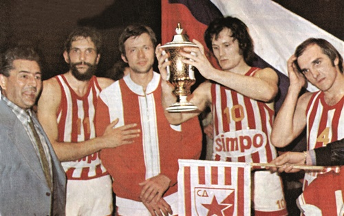
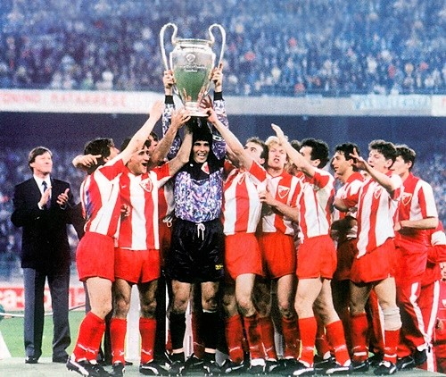
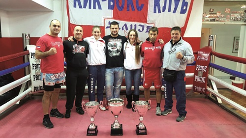

Спортско друштво Црвена звезда
Спортско друштво Црвена звезда из Београда је спортско друштво које обухвата велики број клубова који се такмиче у одређеним спортским дисциплинама. Клубови Црвене звезде су освојили 667 трофејa. Од тога 649 титула националног шампиона, националног купа или суперкупа, 8 титула европског првака, 7 титула регионалног шампиона и 3 титуле светског првака. Црвена звезда је најуспешније спортско друштво у Србији. Навијачи СД Црвена звезда називају се Делије север. Навијачка група је основана 1989. године. У оквиру спортског друштва постоје готово сви спортови, али најпознатији је ФК Црвена звезда.
Историја
Црвена звезда је основана 4. марта 1945. године у једној малој сали у Делиградској улици у Београду. Оснивачи клуба су говорили да се дуго већало око имена друштва, али се већина слаже да су "кумови" били Слободан Ћосић и Зоран Жујовић. Ћосић је предлагао име Звезда, а Жујовић је спонтано додао: "Ако је Звезда нека буде црвена". Међу оснивачима су такође били: Светозар Глигорић, Небојша Поповић, Мира Петровић и Милован Ћирић. Од првобитног фискултурног клуба са бројним секцијама, Црвена звезда је прерасла у спортско друштво које обухвата клубове у скоро свим спортским гранама. Истовремено са оснивањем, друштво је почело да делује у осам секција: лако-атлетска, веслачка, кошаркашка, одбојкашка, фудбалска, шаховска, стонотениска и пливачка. Тог првог пролећа, у тих 8 секција, Звездин грб носило је око 350 спортиста. Многи од њих су били руководиоци и спортисти у исто време.  Годину дана касније, Црвена звезда се спаја са фискултурним друштвом "Студент" и постаје Омладинско-студентско фискултурно друштво Црвена звезда. 1948. године секције друштва прерастају у клубове, а већ наредне 1949. године асоцијација тих клубова прераста у Спортско-друштво Црвена звезда. Убрзо се формирају и многи други клубови. Међутим, долази период прве велике кризе Спортског друштва у целини, крајем педесетих и почетком шездесетих. Спортско друштво је постојало само на папиру. Једини клубови који су и тада чврсто били у врху домаћег спорта, и били шампиони, били су фудбалери и кошаркашице. Ипак, 1963. године група старих звездаша покреће иницијативу да се обнови рад Спортског друштва. За председника се бира Мирко Поповић, али су и многе друге личности из јавног живота биле у врху руководства. Убрзо са консолидацијом друштва долази до ревитализације клубова и успостављања система рада у њима. Од круцијалног значаја како за Фудбалски клуб, тако и за читаво друштво, била је изградња новог стадиона. Спортско друштво је лагано расло као и сви клубови у њему, да би почетком седамдесетих до успеха долазило као на траци. Почетак седамдесетих је означен као "први златни период" спортског друштва. У јуниорској конкуренцији, такође је те године остварено безброј шампиона екипно и појединачно. У већини спортова, те oлимпијске 1972. године репрезентативци су били из Црвене звезде.
Навијачи
 Од самог заснивања клуба најистакнутије личности нашег друштва биле су често виђене на утакмицама на Малом Калемегдану. Популарност је расла са сталним успесима како кошаркашког клуба, али пре свега фудбалског клуба. Црвена звезда је српски клуб са највећим бројем навијача према већини истраживања која су спроведена у Београду, а и на територији читаве Србије. Навијачи Црвене звезде се називају Делије. Ова навијачка група настала је уједињењем дотадашњих мањих навијачких група 7. јануара 1989. Навијачи Црвене звезде и Олимпијакоса развили су дубоко пријатељство. Навијачи оба тима су себе назвали „Православна браћа“ („Orthodox Brothers“). У ову братску унију навијача касније су се укључили и навијачи Спартака из Москве.
Од самог заснивања клуба најистакнутије личности нашег друштва биле су често виђене на утакмицама на Малом Калемегдану. Популарност је расла са сталним успесима како кошаркашког клуба, али пре свега фудбалског клуба. Црвена звезда је српски клуб са највећим бројем навијача према већини истраживања која су спроведена у Београду, а и на територији читаве Србије. Навијачи Црвене звезде се називају Делије. Ова навијачка група настала је уједињењем дотадашњих мањих навијачких група 7. јануара 1989. Навијачи Црвене звезде и Олимпијакоса развили су дубоко пријатељство. Навијачи оба тима су себе назвали „Православна браћа“ („Orthodox Brothers“). У ову братску унију навијача касније су се укључили и навијачи Спартака из Москве.